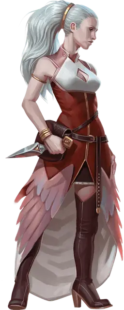

Калаштар
Kalashtar

Я — калаштар, рожденный в двух мирах.
Больше тысячи лет назад мои предки связали нашу семейную линию с духом Каштай. Я — дитя этого союза. Каштай следует за мной.
Её воспоминания приходят ко мне во снах, и порой я слышу ее шёпот в тишине моего разума. До тех пор, пока хотя бы одна из моих сестер жива, Каштай будет жить. А пока она будет жить, она будет сражаться с Ил-Лаштавар.
— Лакаштай, служитель света
Калаштары — это раса, которая была создана после слияния человечества с духами-беженцами из Плана Снов. Духи называют это место куори.
Калаштары всегда предстают мудрыми и духовными людьми, относясь с состраданием к каждому. Однако в калаштарах есть нечто чужеродное. Их постоянно преследуют конфликты духов, с которыми они связаны.
Связь с духами
Каждый калаштар имеет связь с духом света, который также связан с другими членами семьи. В физическом смысле калаштары выглядят как люди, однако их духовные связи сильно влияют на них.
Калаштары имеют симметричные и слегка угловатые черты лица. Их движения и язык тела отличается от остальных людей.
Многие находят в этом грацию, однако некоторых это просто нервирует. Глаза калаштаров светятся, когда они фокусируются над какой-то задачей или испытывают сильные эмоции.
Калаштар не может напрямую связываться с духом из куори. Калаштар может ощущать их связь как инстинкт или вдохновение на основе снов, которые дух показывал человеку. Эта связь даёт калаштару слабые псионические способности, а также защиту от психических атак. Большинство из этих духов выступают в роли добродетелей, но среди них есть и воины.
Калаштар и Мастер могут обсудить этот вопрос, чтобы понять природу духа. Обычно калаштар знает имя и природу своего духа, но некоторые (к примеру, сироты-калаштары, воспитанные у посторонних) могут даже не знать об их связи с духами или об источнике своих сил.
Связь с духами может проявить в калаштаре необычные особенности поведения.
Преследуемый кошмарами
Духи-добродетели, связанные с калаштарами, сбежали с мира снов Дал Куор, чтобы скрыться от злых духов, захвативших мир.
Духи-повстанцы считают, что через медитацию и преданность они могут изменить фундаментальную природу Дал Куор, изменив баланс сил в сторону света.
Таким образом большинство сообществ калаштары сфокусированы на актах преданности вере, известные как Путь Света. Однако темные силы Дал Куора имеют свои планы на счет Эберрона.
Используя силу, известную как Дремлющая тьма, эти монстры манипулируют жителями Кхорвайра и уничтожают калаштаров при любом удобном случае. Многие калаштары защищают себя от Дремлющей тьмы живя в сплочённых сообществах, которые чтут Путь Света.
Однако некоторые калаштары ставят перед собой цель найти агентов Дремлющий тьмы и противостоять их планам или просто защитить невиновных. Среди калаштаров есть те, кто вырос в изоляции и не знает ничего ни о Дал Куоре, ни о Дремлющей тьме.
Такие представители расы могут использовать свои способности для личной выгоды. Они также могут действовать в разрез с убеждениями их духа. Это может вызвать перепады настроения и конфликты между калаштаром и духом.
Имена калаштаров
Имя калаштара формируется из личного префикса и имени духа куори внутри калаштара.
У каждого духа есть пол, однако он может как совпадать, так и не совпадать с полом самого калаштара. Женщины-калаштары могут иметь имя, которое другие примут за мужское, так как она может быть связана с духом мужского пола.
Сироты-калаштары вряд ли знают имя своего духа, поэтому они берут имя среди тех, кто их вырастил.
Мужские имена куори: Ваш, Кош, Мелк, Таш, Улад, Хад, Харет.
Женские имена куори: Ашана, Аштаи, Вакри, Ишара, Нари, Тана, Тари.
Имена калаштаров: Валакхад, Вишара, Далаваш, Долишара, Коратана, Кораташ, Ланхарет, Молавакри, Невиташ, Сорашана, Тораштай, Халакош, Хоратари.
Особенности поведения калаштаров
| к10 | Особенность |
| 1 | Вы пытаетесь понять мотивы и чувства ваших врагов. |
| 2 | Вы предпочитаете использовать телепатию, вместо того, чтобы говорить вслух. |
| 3 | Вы чувствуете сильное желание защищать невиновных. |
| 4 | Вы используете логику снов для решения ситуаций |
| 5 | Вы обсуждаете разные вещи вслух со своим духом куори. |
| 6 | Вы подавляете свои эмоции и полагаетесь на логику. |
| 7 | На вас очень сильно влияют эмоции окружающих вас людей. |
| 8 | Вы пытаетесь найти мирное решение любой проблемы, если это возможно. |
| 9 | В вас поселился дух воина, и вы готовы сражаться ради благородной цели. |
| 10 | Вы одержимы заговором Тьмы Сновидений. |
Особенности калаштаров
Ваш персонаж-калаштар будет обладать следующими особенностями:
Увеличение характеристик. Значение вашей Мудрости увеличивается на 2, а значение Харизмы увеличивается на 1.
Возраст. Калаштары растут в физическом смысле точно также, как и люди, и имеют такой же жизненный цикл.
Мировоззрение. Любое.
Размер. По телосложению калаштары схожи с людьми, однако в среднем они на несколько дюймов выше. Ваш размер — Средний.
Скорость. Ваша базовая скорость ходьбы составляет 30 футов.
Двойственность разума. Вы совершаете с преимуществом все спасброски Мудрости.
Ментальная дисциплина. Вы получаете сопротивление урону психической энергией.
Связь разумов. Вы можете телепатически разговаривать с любым существом, которое видите, при условии, что оно находится в пределах досягаемости (расстояние в футах равняется вашему уровню, умноженному на 10). Вам не нужно знать язык существа, чтобы оно понимало ваши телепатические сообщения, но существо должно быть в состоянии понимать по крайней мере один язык.
Когда вы используете эту особенность, чтобы общаться телепатически с существом, вы можете действием дать ему возможность общаться с вами телепатически в течение 1 часа или до тех пор, пока вы не окончите этот эффект действием.
Чтобы использовать эту особенность, существо должно видеть вас и находиться в пределах досягаемости этой особенности. Вы можете дать возможность отвечать вам только одному существу за раз.
Отделённый от снов. Калаштары спят, но они не погружаются в мир снов как остальные живые существа. Вместо этого во сне их разум перенимает воспоминания от духа. Таким образом, вы обладаете иммунитетом к заклинаниям и магическим эффектам, которые могут влиять на ваши сны, например заклинание вещий сон [dream], но не к заклинаниям и эффектам, которые усыпляют вас, например, к заклинанию усыпление [sleep].
Языки. Вы можете говорить, писать и читать на Общем и Куори, а также на одном дополнительном языке на ваш выбор.